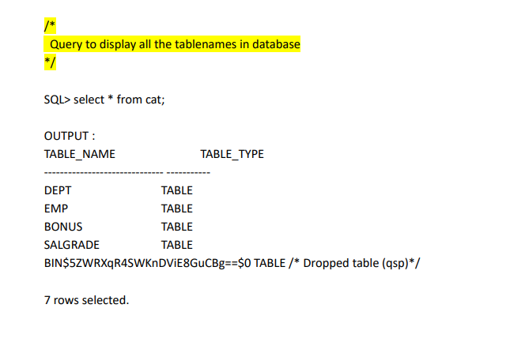

Data Definition language (DDL) is used to create, Rename, drop the columns or tables.If we want to create a table we need to learn about two things mainly:
1. DATA TYPES: It decides which type of data has to be stored in columns. They are 3 types of data types:
| DATATYPE
| DESCRIPTION |
| Number () |
Whenever we are setting the data type as Number, it is always numerical in nature. |
| char () |
whenever we are setting the datatype as character, it should be always Alphabetical in nature.It is present in the old version of the database. |
| varchar() |
We are using varchar2() function for the latest version and it accepts both numerical and alphabetical values. |
2.CONSTRAINTS: Constraints are the conditions the columns have to flow while taking the records as input. They are two main constraints:
| KEYTYPE
| DESCRIPTION |
| UNIQUE KEY |
It doesn't allow duplicate values, but it allows null values |
| NOT NULL KEY |
It doesn't allow null values, but it allows duplicate values |
Syntax for creating a table:
SQL> create table table_name
(Column name1 datatype(size) Constrains,
Column name2 datatype(size) Constrains,
Column name3 datatype(size) Constrains............);
NOTE: Here 'SIZE' represents a number of characters.
Qurey for crating a table
SQL> create table std
( sno number(5) unique,
sname char(5) not null,
course char(5) not null );
Qureies on created table

Syntax for Renaming a table:
SQL> Rename old_table _name to new_table_name;
Qurey for renaming a table
SQL> rename std to sep ;
Qureies on renamed table
Syntax for droping a table:
SQL> drop table table_name;
Qurey for droping a table
SQL> drop table qsp ;
Qurey to dispaly all tablenames on database

ALTER
Alter comment is used to do modifications for an existing table.It may be adding a column, renaming old column name to new column and dropping a column from existing table.
Syntax for adding a column:
SQL> Alter table table_name
Add( column_name datatype(size) constraint);
Qurey for renaming a column
SQL> Alter table table_name
add (ph_num number(10) unique) ;
Syntax for Renaming a column:
SQL> Alter table table_name
rename column old_column_name to new_column_name;
Qurey for renaming a column
SQL> Alter table table_name
rename column ph_num to mob_num ;
Syntax for droping a column:
SQL> Alter table table_name
drop column column_name ;
Qurey for renaming a column
SQL> Alter table table_name
drop column mob_num ;